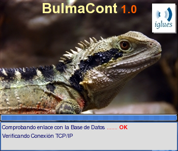
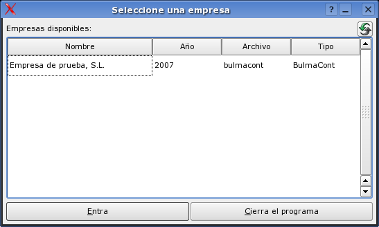

Inicio del programa

Lo primero que aparece al inicial el programa es una ventana de 'splash' que nos da la bienvenida al programa.
En esta ventana van apareciendo mensajes de inicio del programa. Se puede cerrar la ventana haciendo
doble click sobre ella con el botón izquierdo del ratón o pulsando la
tecla Intro.

BulmaCont es un programa que permite gestionar múltiples empresas, cada una de ellas
en una base de datos diferente. Por este motivo, antes de iniciar el programa nos pregunta con qué empresa
queremos trabajar. Para actualizar el listado de empresas disponibles podemos pulsar la tecla F5
o sobre el botón situado en la parte superior-derecha de la pantalla.